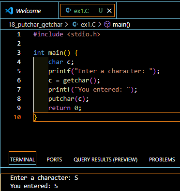
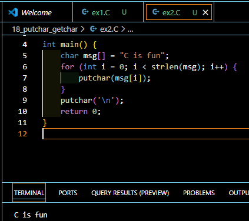
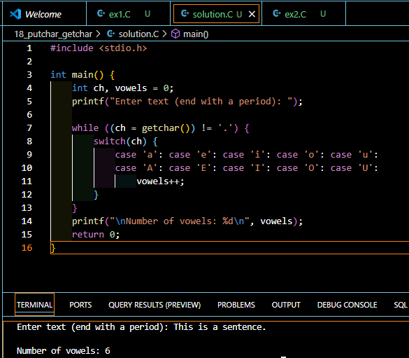

Introduction
Character input and output operations are fundamental building blocks in C programming. While many beginners start with printf() and scanf(), understanding character-level I/O functions like putchar() and getchar() opens up new possibilities for more precise input/output control. This comprehensive guide will walk you through these essential functions and help you master character-level I/O in C.
Understanding Character I/O in C
What are Character I/O Functions?
Character I/O functions are specialized tools in C that handle input and output one character at a time. These functions provide more granular control compared to their formatted counterparts like printf() and scanf(). The main functions we’ll explore are: - putchar(): Outputs a single character to the screen - getchar(): Reads a single character from the keyboard
Why Use Character-Level I/O?
- More precise control over input and output
- Simpler syntax for single-character operations
- Better performance for character-by-character processing
- Useful for building custom input routines
The putchar() Function
Syntax and Usage
int putchar(int character);The putchar() function takes a single character as an argument and displays it on the screen. Despite the parameter being declared as an int, it’s typically used with characters.
Example Programs
Here’s a simple example that demonstrates putchar():
#include <stdio.h>
int main() {
char c;
printf("Enter a character: ");
c = getchar();
printf("You entered: ");
putchar(c);
return 0;
}
#include <stdio.h>
#include <string.h>
int main() {
char msg[] = "C is fun";
for (int i = 0; i < strlen(msg); i++) {
putchar(msg[i]);
}
putchar('\n');
return 0;
}
The getchar() Function
Syntax and Usage
int getchar(void);getchar() reads a single character from the keyboard and returns it as an integer value.
Input Buffering
One crucial aspect of getchar() is that it’s buffered, meaning:
- Input is stored in a buffer until Enter is pressed
- Users can use Backspace to correct mistakes before pressing Enter
- The Enter key (newline character) remains in the buffer
Handling Return Values
int ch = getchar(); // Store input in an integer variable
if (ch == EOF) {
// Handle end-of-file condition
}Dealing with Newline Characters
The Newline Problem
When using getchar(), a common issue arises with the newline character (‘’) remaining in the input buffer. Consider this example:
char first = getchar(); // Gets first character
char second = getchar(); // Gets the newline instead of intended character!Solutions and Workarounds
- Discard the newline:
char first = getchar();
getchar(); // Discard the newline
char second = getchar();- Loop until newline is consumed:
while (getchar() != '\n'); // Clear input bufferAdvanced Topics
Using getch() for Unbuffered Input
getch() provides an alternative approach with these characteristics:
- Unbuffered input (no Enter key required)
- Immediate character retrieval
- No automatic echo to screen
- No newline handling issues
Comparing getchar() and getch()
| Feature | getchar() | getch() |
|---|---|---|
| Buffer | Yes | No |
| Requires Enter | Yes | No |
| Echo to screen | Yes | No |
| Backspace support | Yes | No |
Best Practices
Error Handling
- Always check for EOF:
int ch;
while ((ch = getchar()) != EOF) {
// Process character
}- Use int for character storage:
int ch = getchar(); // Preferred over charPerformance Considerations
- Character I/O functions are generally faster than formatted I/O
- Buffered input (getchar) provides better user experience for text entry
- Use getch() when immediate response is needed
Your Turn!
Try this exercise:
Create a program that reads characters until a period is entered, counting the number of vowels.
Problem:
// Write your solution hereClick here for Solution!
Solution:
#include <stdio.h>
int main() {
int ch, vowels = 0;
printf("Enter text (end with a period): ");
while ((ch = getchar()) != '.') {
switch(ch) {
case 'a': case 'e': case 'i': case 'o': case 'u':
case 'A': case 'E': case 'I': case 'O': case 'U':
vowels++;
}
}
printf("\nNumber of vowels: %d\n", vowels);
return 0;
}
Quick Takeaways
- Include <stdio.h> for character I/O functions
- Use getchar() for buffered character input
- Use putchar() for single character output
- Handle newline characters explicitly
- Consider getch() for immediate character input
- Store character input in int variables
FAQs
Q: Why use int instead of char for getchar()? A: getchar() can return EOF (-1), which might not fit in a char variable.
Q: How can I clear the input buffer? A: Use a while loop with getchar() until you reach a newline character.
Q: Why doesn’t my getchar() program continue immediately after I type? A: getchar() waits for Enter due to buffered input.
Q: Is putchar() faster than printf()? A: Yes, putchar() is generally faster for single-character output.
Q: Can I use these functions for file I/O? A: Yes, but you’ll need to redirect standard input/output or use file-specific variants.
References
GeeksforGeeks. (2023). “getchar() Function in C”. A comprehensive guide to character input in C programming.
Stack Overflow. (2023). “Understanding getchar() and putchar() in C Programming”. Community discussion and examples.
IT Learn. (2023). “C Programming Input/Output Functions”. Detailed explanation of I/O operations.
MyCPlus. (2023). “C Programming Input Output Tutorial”. Practical examples and best practices.
These sources provide additional information and examples to supplement the concepts covered in this article. Each link opens in a new window and contains valuable resources for further learning.
We encourage you to share your experiences with these functions and any creative solutions you’ve developed. Leave a comment below or share this guide with fellow programmers!
This article provides a comprehensive overview of character I/O in C programming. If you found it helpful, please share it with others who might benefit from this knowledge. For questions or clarifications, feel free to leave a comment below!
Happy Coding! 🚀

You can connect with me at any one of the below:
Telegram Channel here: https://t.me/steveondata
LinkedIn Network here: https://www.linkedin.com/in/spsanderson/
Mastadon Social here: https://mstdn.social/@stevensanderson
RStats Network here: https://rstats.me/@spsanderson
GitHub Network here: https://github.com/spsanderson
Bluesky Network here: https://bsky.app/profile/spsanderson.com
My Book: Extending Excel with Python and R here: https://packt.link/oTyZJ